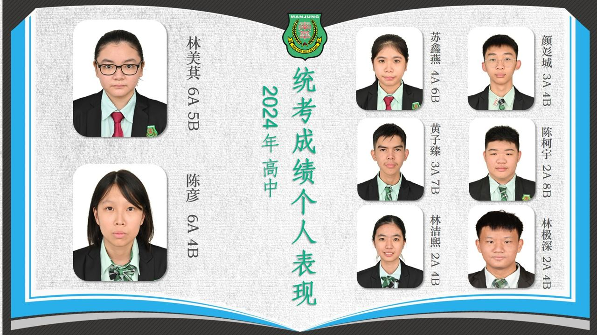
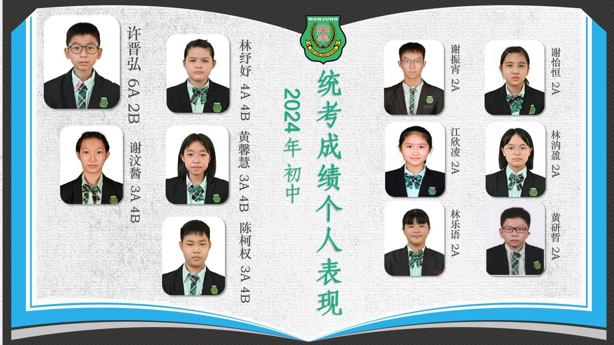

南华独中统考捷报传
南华独中统考捷报传
多科及格率较往年有所进步
在2024年度第50届全国独中统一考试（统考）中，南华独中高中和初中考生表现稳中有进，取得了令人欣慰的成绩。高中考生的总及格率达到80%，初中考生则以87%的总及格率展现了扎实的基础和不懈的努力。这些成绩不仅反映了学生们的辛勤付出，也展现了学校教育教学质量的稳步提升。
在高中统考科目中，华文、英文、数学、高级数学I和II、历史、地理、化学、物理、商业学、簿记与会计以及经济学的及格率均有显著提升。特别是电脑与资讯工艺和美术两科，均取得了100%的及格率。此外，华文科目以97.14%的及格率位居前列，英文科目达到94.29%，数学84.21%，商业学和经济学均为84%，历史则达到80%。这些学科的进步展示了学生们在多方面取得的扎实成绩。
初中统考成绩同样令人鼓舞，多科及格率较往年有所进步。其中，华文和美术的及格率均达到90%，英文和历史分别为88%，马来西亚文和科学以87%的及格率紧随其后，地理为85%，数学则达到80%。初中阶段的整体进步为未来的发展奠定了良好的基础。
在个人成绩方面，高中考生中，林美萁和陈彦以6A的优异成绩脱颖而出；苏鑫燕获得4A，黄子臻和颜彣城获得3A，陈柯宇、林洁熙和林极深各获2A。初中考生中，许晋弘以6A的成绩表现出色，林纾妤获得4A，谢汶醔、黄馨慧和陈柯权获得3A，林乐语、林汭盈、谢振霄、谢怡恒、江欣凌和黄研哲各获2A。
本次统考成绩不仅展现了本校师生的辛勤付出，也为学校的教育质量注入了新的信心与动力。在迈向下一阶段的路途中，全体师生将继续秉持拼搏进取的精神，保持学习的热情与动力，为实现更加辉煌的目标而努力奋斗。

